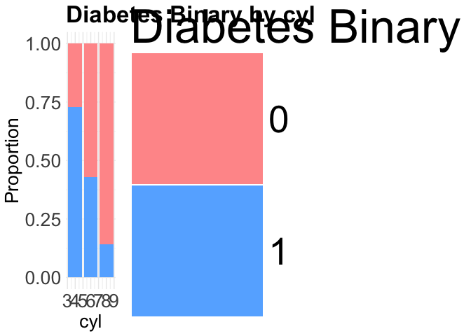
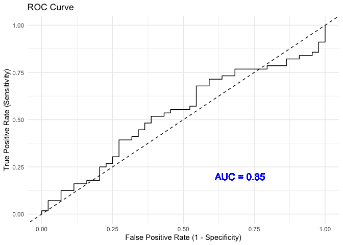

Overview
The goal of predictdiabetes is to provide functions that are useful for developing logistic regression models. This package was orginally designed for a logistic regression prediction model of diabetes risk based on BRFSS health indicators, but the package is designed to be applicable to other models.
Functions
-
na_count_type: Given an input data frame, check for the number of missing values (NA), the number of distinct values, and the data type of each variable. -
category_target: Given an input dataframe with a categorical variable, return the number and proportion of instances with each category value, in alphabetical (for characters and logical) or numerical (for integers) order -
categorical_bars: Create a list of bar plots for each categorical variable in a data frame. -
info_gain: Calculate and sort information gain for feature selection. -
plots_grid: Combine a list or mulitple lists ofggplot2objects into a single grid layout usingpatchwork. The number of columns in the grid can be specified withnum_cols. -
cramer_chi_results: Runs chi-squared tests and calculates Cramer’s V independently for each variable in a given data frame. -
lr_pipeline: Trains and fits a logistic regression model and cross-validates for optimal hyperparameter values. -
roc_plot: Creates an ROC curve plot and saves it to the specified file path. -
cm_plot: Creates a confusion matrix plot and saves it to the specified file path. -
coeff_plot: Plot LASSO classification model coefficients.
Installation
You can install the development version of predictdiabetes from GitHub with:
# install.packages("devtools")
devtools::install_github("DSCI-310-2025/predictdiabetes")Example
Begin with some EDA by checking the number of NAs, the number of distinct values and the data type in each column.
library(predictdiabetes)
na_count_type(mtcars)
#> mpg cyl disp hp drat wt
#> NA_Count "0" "0" "0" "0" "0" "0"
#> Distinct_Count "25" "3" "27" "22" "22" "29"
#> Current_Data_Type "double" "double" "double" "double" "double" "double"
#> qsec vs am gear carb
#> NA_Count "0" "0" "0" "0" "0"
#> Distinct_Count "30" "2" "2" "3" "6"
#> Current_Data_Type "double" "double" "double" "double" "double"
#> mpg cyl disp hp drat wt
#> NA_Count "0" "0" "0" "0" "0" "0"
#> Distinct_Count "25" "3" "27" "22" "22" "29"
#> Current_Data_Type "double" "double" "double" "double" "double" "double"
#> qsec vs am gear carb
#> NA_Count "0" "0" "0" "0" "0"
#> Distinct_Count "30" "2" "2" "3" "6"
#> Current_Data_Type "double" "double" "double" "double" "double"When building the model, you will likely want to understand the proportions of the binary variable of interest within each category for categorical variables. predictdiabetes::categorical_bars() can be used to provide plots for every provided categorical variable.
# Generate bar plots for categorical variables from the mtcars dataset
bar_plots <- categorical_bars(
data_frame = mtcars,
cat_vars = c("cyl", "gear"),
target_col = "am",
title_size = 25,
axis_size = 20
)
# Display the first bar plot
plot(bar_plots[["cyl"]])
After building the LASSO model, ROC plots would be beneficial to evaluate how your model would perform.
